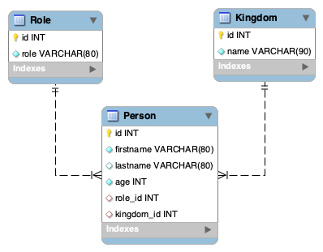

Mise en place
Clone ce dépôt grâce au lien donné ci-dessus ⬆ Code.
Le dossier que tu viens de cloner contient un fichier
database.sql.
Ouvre ton terminal à la racine de ce dossier
cd sqladvancedworkshop
et lance la commande suivante en remplaçant
<your_name>
par ton véritable identifiant de connexion à Mysql :
mysql -u <your_name> -pmysql> SOURCE database.sql;
Connecte-toi ensuite à Mysql et vérifie que la BDD
kaamelott a
bien été créée et contient les tables Kingdom,
Role, et Person avec quelques
enregistrements.
🖥️ Comment procéder
Voici les structures des tables que tu viens de créer et sur lesquelles t’appuyer pour la réalisation de cet atelier.

En racine du dossier que tu viens de cloner se trouve également le
fichier
workshop.sql.
Tu pourras t’en servir pour écrire les requêtes au fur et à mesure de
l’atelier. Pour les exécuter facilement dans ton terminal, utilise la
commande suivante :
mysql> SOURCE workshop.sql;🤴 Premières requêtes
Ecrire les requêtes qui permettent d’afficher respectivement les informations suivante :
-
Le prénom, nom et âge des personnages
-
Le prénom, nom des personnages ainsi que leur royaume, uniquement pour ceux étant reliés à un royaume
-
Fais la même chose, mais en incluant tous les personnages, qu'ils aient un royaume ou non.
🧙♂️ Et on complexifie !
De la même manière, écrire les requêtes permettant d’afficher :
-
La moyenne de l’âge des personnages
-
La moyenne de tous les personnages n’ayant pas le rôle de magicien
-
Le nombre de personnage par royaume (inclure les royaumes n’ayant pas de personnage)
-
La moyenne de l’âge par rôle
-
La liste de tous les personnages avec leur rôle et royaume éventuels
-
La liste des royaumes ayant au moins 2 sujets
Félicitations, tu es arrivé au bout !